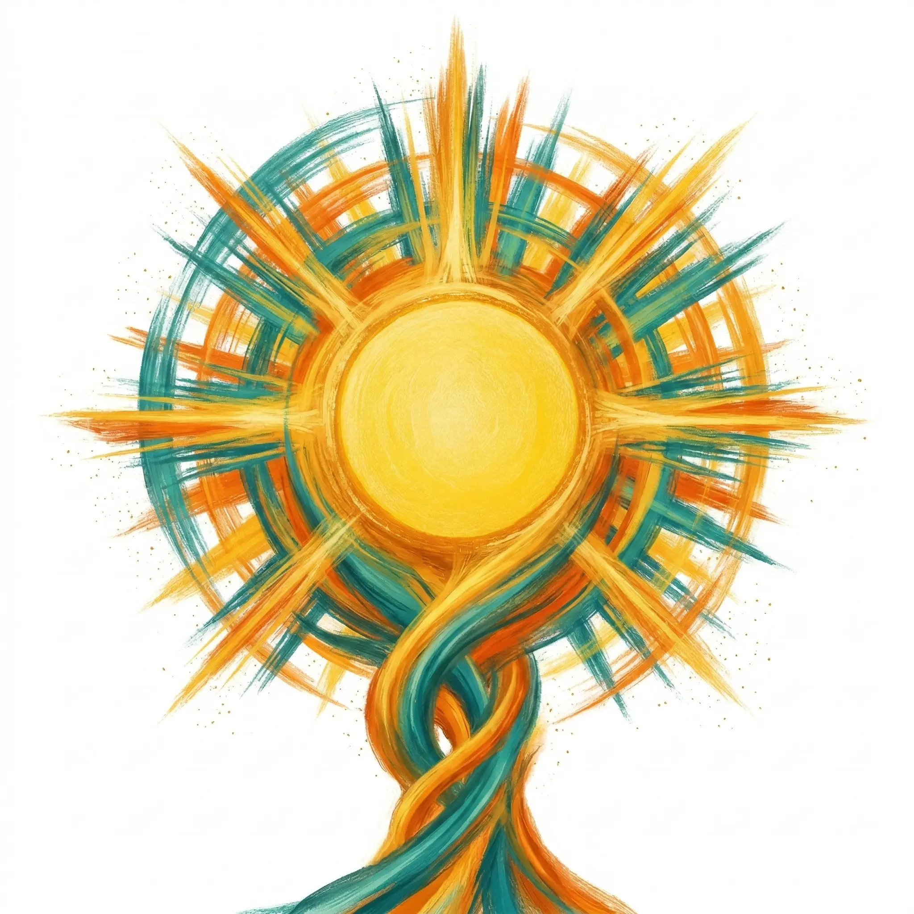
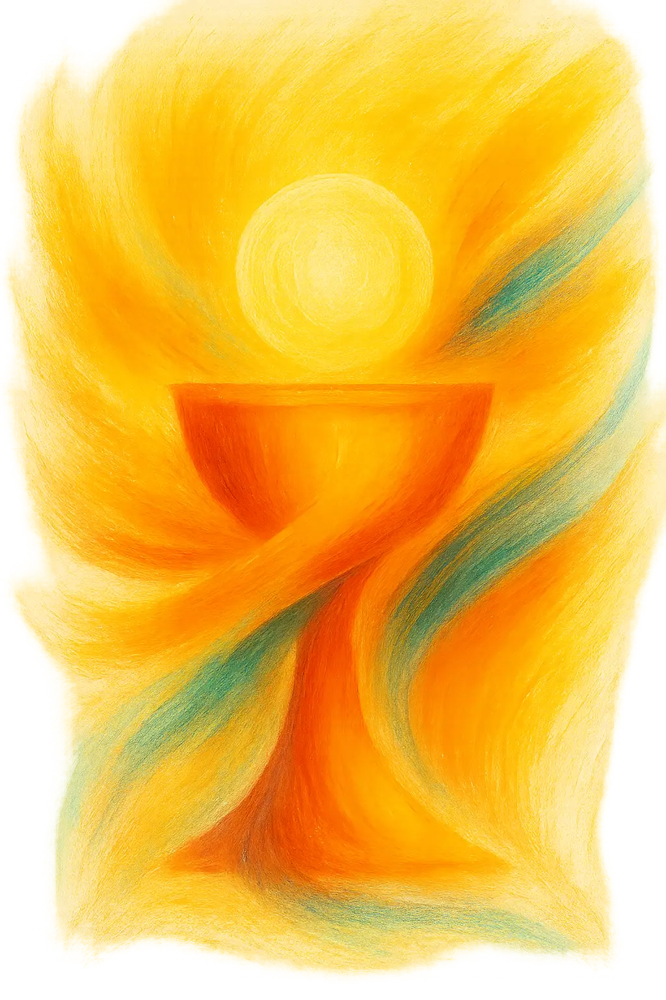

Jóvenes organizando adoración.
Llevamos corazones a Jesús.
Iglesia Joven es el rostro joven de la Iglesia Católica. No somos un movimiento juvenil independiente ni una pastoral paralela — somos parte de la misma Iglesia que es Una, Santa, Católica y Apostólica.
El centro de todo lo que hacemos es la Eucaristía. Organizamos Adoraciones Eucarísticas mensuales para que los jóvenes se encuentren con Jesús en el Sacramento del altar.
Actualmente crecemos desde la Parroquia San Rafael Arcángel de Escazú, pero Iglesia Joven es un rostro que puede florecer en cualquier comunidad y parroquia — porque somos la Iglesia, y la Iglesia está en todas partes.


La Eucaristía es el sacramento más grande de la Iglesia Católica. En ella, el pan y el vino se convierten realmente en el Cuerpo y la Sangre de Jesucristo — no de manera simbólica, sino real, verdadera y sustancial.
Este misterio, llamado transubstanciación, ocurre en cada Santa Misa. Jesús se entrega completamente a nosotros en la Eucaristía, tal como se entregó en la Cruz: con todo su amor, todo su ser.
"El que come mi carne y bebe mi sangre tiene vida eterna, y yo lo resucitaré en el último día."
— Juan 6:54
La Adoración Eucarística es el acto de estar en presencia de Jesús en el Santísimo Sacramento, expuesto en la Custodia. Es un tiempo de oración, silencio y encuentro personal con Dios.
Durante la adoración, simplemente estamos con Él — oramos, cantamos, escuchamos. No necesitamos palabras perfectas ni fórmulas elaboradas. Solo presencia y corazón abierto.
Los santos y los papas la describen como uno de los actos más poderosos de la vida cristiana. San Juan Pablo II decía que la adoración es el corazón de toda vida de fe.
Nosotros organizamos estas adoraciones para que más jóvenes descubran que Jesús no es una idea — es una Persona que espera, que ama, que sana.
Parroquia San Rafael Arcángel · Escazú, Costa Rica · 7:00 PM
Nacemos desde la Parroquia San Rafael Arcángel de Escazú, una de las comunidades más vivas de Costa Rica. Pero Iglesia Joven no es un movimiento exclusivo de esta parroquia — somos el rostro joven de la Iglesia, y podemos florecer en cualquier lugar.